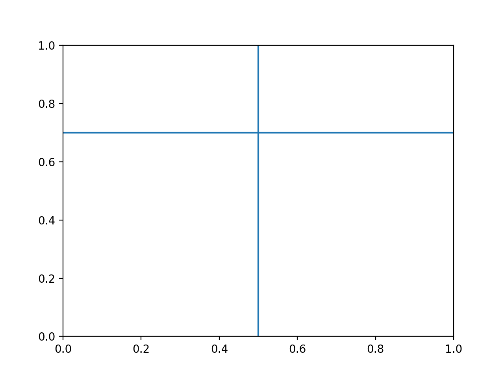

Below is the content demonstrated in the workshop held on February 25, 2022. It illustrates how one proceeds Maximum-Likelihood Estimation in Python and also helps you understand the concept of confidence intervals.
Tools1 🔗
plt.axvline and plt.axhline 🔗
Draw vertical and horizontal lines respectively.
plt.axvline(0.5)
plt.axhline(0.7)
plt.show()

opt.minimize(fun, x0, ...) 🔗
Minimize fun with initial guess x0.
Note that we import an additional module here by import scipy.optimize as opt.
# Here we minimize y = x**4 + x**2.
def y(x): return x**4 + x**2
import scipy.optimize as opt
res = opt.minimize(y, x0=np.asarray([0.1]))
print('The minimized value of y is', res.fun)
print('The minimum happens at x =', res.x)
The minimized value of y is 1.531597404220429e-13
The minimum happens at x = [-3.91356283e-07]
opt.fsolve(fun, x0, ...) 🔗
Find the roots of a function with initial guess x0.
# Here we solve x**4 + x**2 = 1, or equivalently,
# f(x) := x**4 + x**2 - 1 = 0.
def f(x): return x**4 + x**2 - 1
res = opt.fsolve(f, x0=np.asarray([-1., 1.]))
print('The roots found are', res)
The roots found are [-0.78615138 0.78615138]
np.vectorize 🔗
You can vectorize any function, i.e. make it able to perform element-wise operation on NumPy array, with np.vectorize.
def myFunction(x):
if x > 0:
return x**2
else:
return 0
vectorized_myFunction = np.vectorize(myFunction)
vectorized_myFunction(np.arange(-2, 3, 1))
array([0, 0, 0, 1, 4])
Hands-On 🔗
Log-likelihood 🔗
- Generate 100 random variates from an Exponential distribution, $\mathrm{Expon}(\theta=2)$, where $\theta$ denotes its lifetime.
- Define a function
n2lloftheta, which stands for $-2\ln L(\theta)$, with the aid ofnp.sum,np.log. - Plot $-2\ln L(\theta)$ versus $\theta \in [1,3]$ with the aid of
np.vectorize.
Point Estimation 🔗
- Determine the estimate, $\hat{\theta}$, by minimizing $-2\ln L(\theta)$ with respect to $\theta$ with the aid of
opt.minimize.
Interval Estimation 🔗
- Plot a vertical line passing $-2\ln L_{\mathrm{max}}$.
- Plot a horizontal line $y = -2\ln L_{\mathrm{max}} + 1$.
- Construct an interval $[\theta_{\mathrm{low}},\theta_{\mathrm{high}}]$ by finding roots of $f(\theta) = -2 \ln L(\theta) -[-2 \ln L_{\mathrm{max}}+1]$ with the aid of
opt.fsolve. - Does the true value fall within the interval? Yes or no?
Verification and Practice 🔗
- Repeat the above steps 100 times. How many times do the true values fall within the intervals? That is, what’s the probability of the statement “The true value falls within this interval that I construct by finding $\theta$ such that $-2 \Delta \ln L(\theta) =1$” being true?
- Construct a $0.95$ (i.e. $2\sigma$) confidence interval instead and verify it.
-
It’s assumed that you’ve already imported the familiar modules i.e.
import numpy as np; import matplotlib.pyplot as plt; import scipy.stats as st. ↩︎